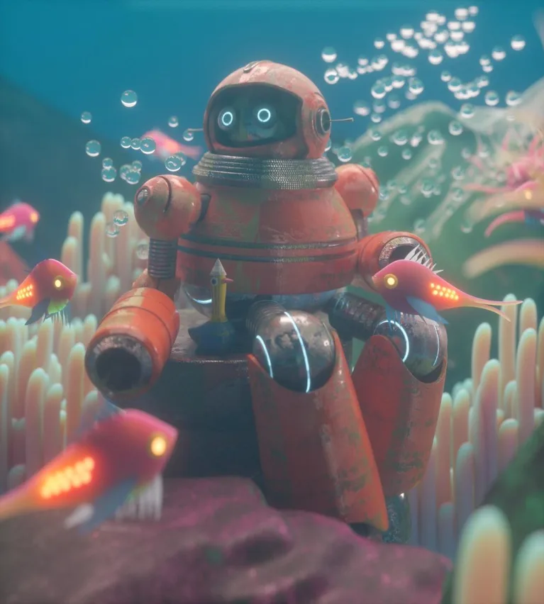
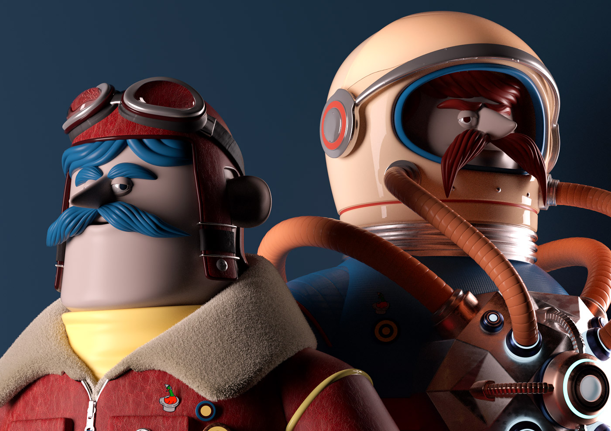
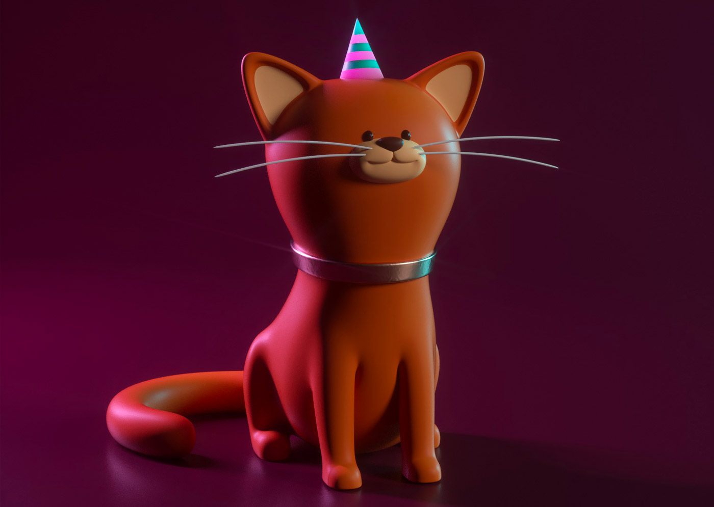
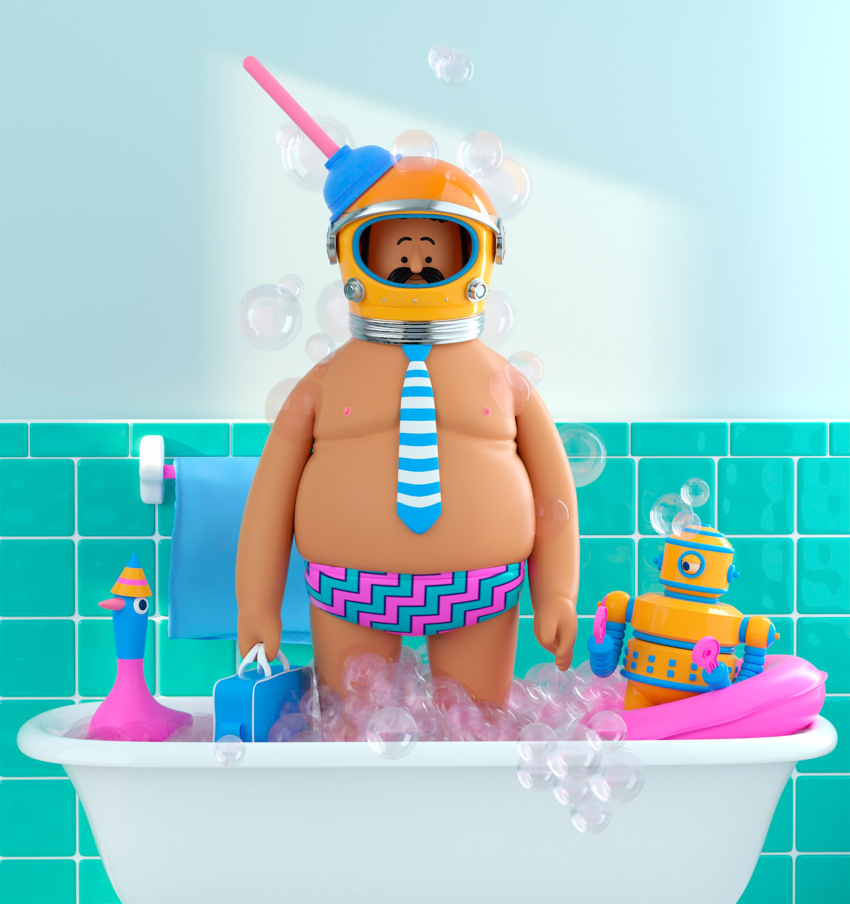
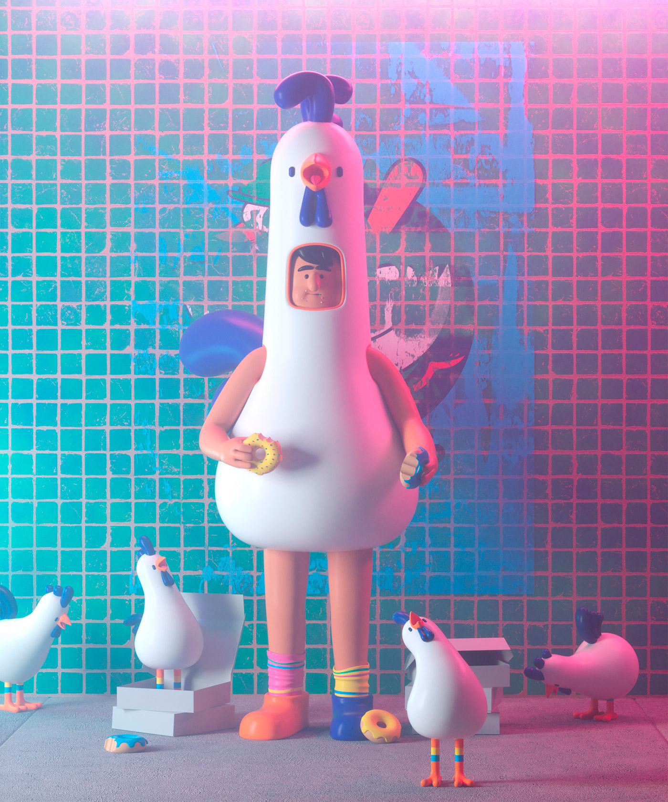

Aaron Martinez
Illustratore messicano che dalla pittura si è orientato verso l'illustrazione e il design. Il suo lavoro fonde diverse discipline come l'illustrazione vettoriale, la modellazione 3D, l'animazione e persino alcuni processi industriali, che combina con un'estetica colorata e amichevole. È uno specialista nella creazione di personaggi, sperimentazione di materiali e illuminazione con Cinema 4D e OctaneRender.
    